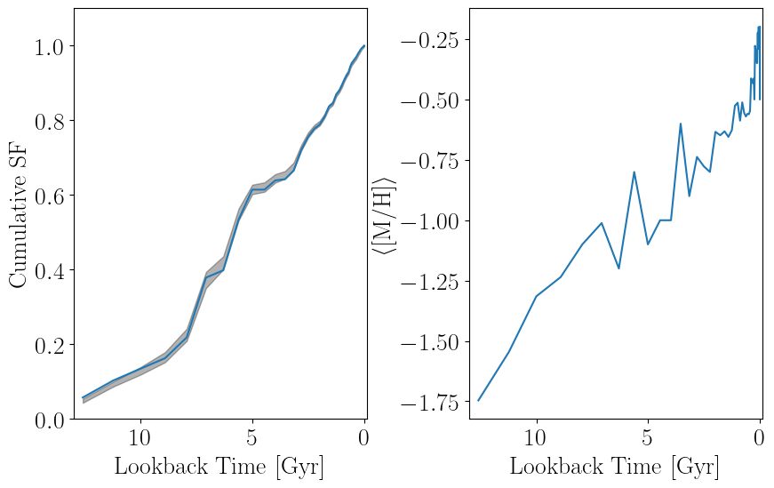

<!DOCTYPE html>
<html lang="en"><head><meta charset="UTF-8"/><meta name="viewport" content="width=device-width, initial-scale=1.0"/><title>Linear Age-Metallicity Relation · StarFormationHistories.jl</title><meta name="title" content="Linear Age-Metallicity Relation · StarFormationHistories.jl"/><meta property="og:title" content="Linear Age-Metallicity Relation · StarFormationHistories.jl"/><meta property="twitter:title" content="Linear Age-Metallicity Relation · StarFormationHistories.jl"/><meta name="description" content="Documentation for StarFormationHistories.jl."/><meta property="og:description" content="Documentation for StarFormationHistories.jl."/><meta property="twitter:description" content="Documentation for StarFormationHistories.jl."/><script data-outdated-warner src="../../assets/warner.js"></script><link href="https://cdnjs.cloudflare.com/ajax/libs/lato-font/3.0.0/css/lato-font.min.css" rel="stylesheet" type="text/css"/><link href="https://cdnjs.cloudflare.com/ajax/libs/juliamono/0.050/juliamono.min.css" rel="stylesheet" type="text/css"/><link href="https://cdnjs.cloudflare.com/ajax/libs/font-awesome/6.4.2/css/fontawesome.min.css" rel="stylesheet" type="text/css"/><link href="https://cdnjs.cloudflare.com/ajax/libs/font-awesome/6.4.2/css/solid.min.css" rel="stylesheet" type="text/css"/><link href="https://cdnjs.cloudflare.com/ajax/libs/font-awesome/6.4.2/css/brands.min.css" rel="stylesheet" type="text/css"/><link href="https://cdnjs.cloudflare.com/ajax/libs/KaTeX/0.16.8/katex.min.css" rel="stylesheet" type="text/css"/><script>documenterBaseURL="../.."</script><script src="https://cdnjs.cloudflare.com/ajax/libs/require.js/2.3.6/require.min.js" data-main="../../assets/documenter.js"></script><script src="../../search_index.js"></script><script src="../../siteinfo.js"></script><script src="../../../versions.js"></script><link class="docs-theme-link" rel="stylesheet" type="text/css" href="../../assets/themes/catppuccin-mocha.css" data-theme-name="catppuccin-mocha"/><link class="docs-theme-link" rel="stylesheet" type="text/css" href="../../assets/themes/catppuccin-macchiato.css" data-theme-name="catppuccin-macchiato"/><link class="docs-theme-link" rel="stylesheet" type="text/css" href="../../assets/themes/catppuccin-frappe.css" data-theme-name="catppuccin-frappe"/><link class="docs-theme-link" rel="stylesheet" type="text/css" href="../../assets/themes/catppuccin-latte.css" data-theme-name="catppuccin-latte"/><link class="docs-theme-link" rel="stylesheet" type="text/css" href="../../assets/themes/documenter-dark.css" data-theme-name="documenter-dark" data-theme-primary-dark/><link class="docs-theme-link" rel="stylesheet" type="text/css" href="../../assets/themes/documenter-light.css" data-theme-name="documenter-light" data-theme-primary/><script src="../../assets/themeswap.js"></script></head><body><div id="documenter"><nav class="docs-sidebar"><div class="docs-package-name"><span class="docs-autofit"><a href="../../">StarFormationHistories.jl</a></span></div><button class="docs-search-query input is-rounded is-small is-clickable my-2 mx-auto py-1 px-2" id="documenter-search-query">Search docs (Ctrl + /)</button><ul class="docs-menu"><li><a class="tocitem" href="../../">Overview</a></li><li><span class="tocitem">Deriving Star Formation Histories from Hess Diagrams</span><ul><li><a class="tocitem" href="../fitting_intro/">Background and Template Construction</a></li><li><a class="tocitem" href="../unconstrained/">High-Level Methods for Unconstrained Fitting</a></li><li><input class="collapse-toggle" id="menuitem-2-3" type="checkbox" checked/><label class="tocitem" for="menuitem-2-3"><span class="docs-label">Constrained Metallicity Evolution</span><i class="docs-chevron"></i></label><ul class="collapsed"><li class="is-active"><a class="tocitem" href>Linear Age-Metallicity Relation</a><ul class="internal"><li><a class="tocitem" href="#metal_evo_intro"><span>Why Should Metallicity Evolutions Be Constrained?</span></a></li><li><a class="tocitem" href="#Fitting-Functions"><span>Fitting Functions</span></a></li><li><a class="tocitem" href="#Sampling-Methods"><span>Sampling Methods</span></a></li><li><a class="tocitem" href="#linear_amr_implementation"><span>Implementation</span></a></li></ul></li><li><a class="tocitem" href="../log_amr/">Logarithmic Age-Metallicity Relation</a></li><li><a class="tocitem" href="../fixed_amr/">Fixed Age-Metallicity Relations</a></li></ul></li><li><input class="collapse-toggle" id="menuitem-2-4" type="checkbox"/><label class="tocitem" for="menuitem-2-4"><span class="docs-label">Internals</span><i class="docs-chevron"></i></label><ul class="collapsed"><li><a class="tocitem" href="../internals/">Low-Level Functions</a></li><li><a class="tocitem" href="../kernels/">Kernels</a></li></ul></li></ul></li><li><a class="tocitem" href="../../examples/">Examples</a></li><li><a class="tocitem" href="../../simulate/">Simulating Color-Magnitude Diagrams</a></li><li><a class="tocitem" href="../../binaries/">Binary Systems</a></li><li><a class="tocitem" href="../../helpers/">Helper Functions</a></li><li><a class="tocitem" href="../../doc_index/">Index</a></li></ul><div class="docs-version-selector field has-addons"><div class="control"><span class="docs-label button is-static is-size-7">Version</span></div><div class="docs-selector control is-expanded"><div class="select is-fullwidth is-size-7"><select id="documenter-version-selector"></select></div></div></div></nav><div class="docs-main"><header class="docs-navbar"><a class="docs-sidebar-button docs-navbar-link fa-solid fa-bars is-hidden-desktop" id="documenter-sidebar-button" href="#"></a><nav class="breadcrumb"><ul class="is-hidden-mobile"><li><a class="is-disabled">Deriving Star Formation Histories from Hess Diagrams</a></li><li><a class="is-disabled">Constrained Metallicity Evolution</a></li><li class="is-active"><a href>Linear Age-Metallicity Relation</a></li></ul><ul class="is-hidden-tablet"><li class="is-active"><a href>Linear Age-Metallicity Relation</a></li></ul></nav><div class="docs-right"><a class="docs-navbar-link" href="https://github.com/cgarling/StarFormationHistories.jl" title="View the repository on GitHub"><span class="docs-icon fa-brands"></span><span class="docs-label is-hidden-touch">GitHub</span></a><a class="docs-navbar-link" href="https://github.com/cgarling/StarFormationHistories.jl/blob/main/docs/src/fitting/linear_amr.md" title="Edit source on GitHub"><span class="docs-icon fa-solid"></span></a><a class="docs-settings-button docs-navbar-link fa-solid fa-gear" id="documenter-settings-button" href="#" title="Settings"></a><a class="docs-article-toggle-button fa-solid fa-chevron-up" id="documenter-article-toggle-button" href="javascript:;" title="Collapse all docstrings"></a></div></header><article class="content" id="documenter-page"><h1 id="linear_amr_section"><a class="docs-heading-anchor" href="#linear_amr_section">Linear Age-Metallicity Relation</a><a id="linear_amr_section-1"></a><a class="docs-heading-anchor-permalink" href="#linear_amr_section" title="Permalink"></a></h1><h2 id="metal_evo_intro"><a class="docs-heading-anchor" href="#metal_evo_intro">Why Should Metallicity Evolutions Be Constrained?</a><a id="metal_evo_intro-1"></a><a class="docs-heading-anchor-permalink" href="#metal_evo_intro" title="Permalink"></a></h2><p>While the above methods work well for optimizing the per-template <span>$r_j$</span> as a means for fitting SFHs, these methods can produce metallicity evolutions that could be considered unphysical, with large changes in the mean metallicity over small changes in time. An example of this type of behavior is shown in the SFH fit below.</p><p></p><p>While some metallicity variation in the star-forming gas is to be expected, these variations in the SFH fit can end up being quite large depending on the data and isochrone grid adopted. A solution is to construct a more physically-motivated model.</p><p>We can do this using a hierarchical model with a parameterized metallicity distribution function (MDF) where the the <span>$r_j$</span> are not the parameters directly optimized. Rather, we can optimize one stellar mass (or star formation rate) parameter per age bin, and then a number of MDF parameters that determine how that stellar mass is split between models with different metallicities at fixed age. An example for one such MDF model is a linear mean metallicity relation <span>$\langle [\text{M}/\text{H}] \rangle (t) = \alpha \, \left( T_\text{max} - t \right) + \beta$</span> with a Gaussian distribution in metallicity at fixed age. <span>$T_\text{max}$</span> here is the earliest lookback time under consideration such that <span>$\langle [\text{M}/\text{H}] \rangle (T_\text{max}) = \beta$</span>. If the per-age-bin stellar mass coefficients are <span>$R_j$</span>, the age of the stellar population <span>$j$</span> is <span>$t_j$</span>, and the metallicity of population <span>$k$</span> is <span>$[\text{M}/\text{H}]_k$</span>, then we can write the per-model <span>$r_{j,k}$</span> (where we are now using separate indices for age and metallicity) as</p><p class="math-container">\[\begin{aligned}
\mu_j &amp;= \alpha \, \left( T_\text{max} - t_j \right) + \beta \\
r_{j,k} &amp;= R_j \, \frac{ \text{exp} \left( - \left( \frac{ [\text{M}/\text{H}]_k - \mu_j}{\sigma} \right)^2 \right)}{\sum_k \text{exp} \left( - \left( \frac{ [\text{M}/\text{H}]_k - \mu_j}{\sigma} \right)^2 \right)}
\end{aligned}\]</p><p>where the numerator is the MDF at fixed age evaluated at metallicity <span>$[\text{M}/\text{H}]_k$</span> and the denominator is a normalizing coefficient that ensures <span>$\sum_k r_{j,k} = R_j$</span>. In this notation, bin <span>$i$</span> of the complex model Hess diagram (equation 1 of Dolphin 2002) is</p><p class="math-container">\[m_i = \sum_{j,k} \, r_{j,k} \; c_{i,j,k}\]</p><p>Below we show a fit using this hierarchical model to the same data as above. </p><p></p><h2 id="Fitting-Functions"><a class="docs-heading-anchor" href="#Fitting-Functions">Fitting Functions</a><a id="Fitting-Functions-1"></a><a class="docs-heading-anchor-permalink" href="#Fitting-Functions" title="Permalink"></a></h2><p>We provide the method <a href="#StarFormationHistories.fit_templates_mdf"><code>StarFormationHistories.fit_templates_mdf</code></a> to fit this model to an observed Hess diagram.</p><article class="docstring"><header><a class="docstring-article-toggle-button fa-solid fa-chevron-down" href="javascript:;" title="Collapse docstring"></a><a class="docstring-binding" id="StarFormationHistories.fit_templates_mdf" href="#StarFormationHistories.fit_templates_mdf"><code>StarFormationHistories.fit_templates_mdf</code></a> — <span class="docstring-category">Function</span><span class="is-flex-grow-1 docstring-article-toggle-button" title="Collapse docstring"></span></header><section><div><pre><code class="language-julia hljs">fit_templates_mdf(models::AbstractVector{&lt;:AbstractMatrix{S}},
                  data::AbstractMatrix{&lt;:Number},
                  logAge::AbstractVector{&lt;:Number},
                  metallicities::AbstractVector{&lt;:Number},
                  T_max::Number
                  [, σ::Number];
                  x0 = vcat(construct_x0_mdf(logAge, convert(S,13.7)),
                            [0.05, -2.0, 0.2]),
                  kws...) where {S &lt;: Number}
fit_templates_mdf(models::AbstractMatrix{S},
                  data::AbstractVector{&lt;:Number},
                  logAge::AbstractVector{&lt;:Number},
                  metallicities::AbstractVector{&lt;:Number},
                  T_max::Number
                  [, σ::Number];
                  x0 = vcat(construct_x0_mdf(logAge, convert(S,13.7)),
                            [0.05, -2.0, 0.2]),
                  kws...) where {S &lt;: Number}</code></pre><p>Method that fits a linear combination of the provided Hess diagrams <code>models</code> to the observed Hess diagram <code>data</code>, constrained to have a linear age-metallicity relation with the mean metallicity of element <code>i</code> of <code>unique(logAge)</code> being <code>μ[i] = α * (T_max - exp10(unique(logAge)[i]) / 1e9) + β</code>. <code>α</code> is therefore a slope in the units of <code>metallicities</code> per Gyr, and <code>β</code> is the mean metallicity value of stars being born at a lookback time of <code>T_max</code>, which has units of Gyr. Individual weights for each isochrone template are then determined via Gaussian weighting with the above mean and the standard deviation <code>σ</code>, which can either be fixed or fit.</p><p>This function is designed to work best with a &quot;grid&quot; of stellar models, defined by the outer product of <code>N</code> unique entries in <code>logAge</code> and <code>M</code> unique entries in <code>metallicities</code>. See the examples for more information on usage.</p><p>The second call signature supports the flattened formats for <code>models</code> and <code>data</code>. See the notes for the flattened call signature of <a href="../internals/#StarFormationHistories.composite!"><code>StarFormationHistories.composite!</code></a> for more details.</p><p><strong>Arguments</strong></p><ul><li><code>models</code> are the template Hess diagrams for the simple stellar populations that compose the observed Hess diagram. </li><li><code>data</code> is the Hess diagram for the observed data. </li><li><code>logAge::AbstractVector{&lt;:Number}</code> is the vector containing the effective ages of the stellar populations used to create the templates in <code>models</code>, in units of <code>log10(age [yr])</code>. For example, if a population has an age of 1 Myr, its entry in <code>logAge</code> should be <code>log10(10^6) = 6.0</code>.</li><li><code>metallicities::AbstractVector{&lt;:Number}</code> is the vector containing the effective metallicities of the stellar populations used to create the templates in <code>models</code>. This is most commonly a logarithmic abundance like [M/H] or [Fe/H], but you could use a linear abundance like the metal mass fraction Z if you wanted to. There are some notes on the <a href="https://en.wikipedia.org/wiki/Metallicity">Wikipedia</a> that might be useful.</li><li><code>T_max::Number</code> is the time at which the age-metallicity relation has a value of <code>eta</code> in Gyr. For example, if the oldest stellar populations in your isochrone grid are 12 Gyr old, you could set <code>T_max = 12.0</code>. </li></ul><p><strong>Optional Arguments</strong></p><ul><li>If provided, <code>σ::Number</code> is the fixed width of the Gaussian the defines the metallicity distribution function (MDF) at fixed <code>logAge</code>. If this argument is omitted, <code>σ</code> will be a free parameter in the fit. </li></ul><p><strong>Keyword Arguments</strong></p><ul><li><code>x0</code> is the vector of initial guesses for the stellar mass coefficients per <em>unique</em> entry in <code>logAge</code>, plus the variables that define the metallicity evolution model. You should basically always be calculating and passing this keyword argument. We provide <a href="#StarFormationHistories.construct_x0_mdf"><code>StarFormationHistories.construct_x0_mdf</code></a> to prepare the first part of <code>x0</code> assuming constant star formation rate, which is typically a good initial guess. You then have to concatenate that result with an initial guess for the metallicity evolution parameters. For example, <code>x0=vcat(construct_x0_mdf(logAge, 13.7; normalize_value=1e4), [0.05,-2.0,0.2])</code>, where <code>logAge</code> is a valid argument for this function (see above), and the initial guesses on the parameters are <code>[α, β, σ] = [0.05, -2.0, 0.2]</code>. If the provided <code>metallicities</code> are, for example, [M/H] values, then this mean metallicity evolution is μ(t) [dex] = 0.05 [dex/Gyr] * (T_max - t) [Gyr] - 2.0 [dex], and at fixed time, the metallicity distribution function is Gaussian with mean μ(t) and standard deviation σ. If you provide <code>σ</code> as an optional argument, then you should not include an entry for it in <code>x0</code>.</li><li>Other <code>kws...</code> are passed to <code>Optim.options</code> to set things like convergence criteria for the optimization.</li></ul><p><strong>Returns</strong></p><ul><li>This function returns an object (say, <code>result</code>) of similar structure to the object returned by <a href="../unconstrained/#StarFormationHistories.fit_templates"><code>fit_templates</code></a>. Specifically, this method will return a <code>NamedTuple</code> with entries <code>result.mle</code> and <code>result.map</code> for the maximum likelihood and maximum a posteriori estimates, respectively. If you provide a fixed <code>σ</code>, those objects will be instances of <a href="#StarFormationHistories.LogTransformMDFσResult"><code>StarFormationHistories.LogTransformMDFσResult</code></a>. If you allow <code>σ</code> to be freely fit, those objects will be instances of <a href="#StarFormationHistories.LogTransformMDFResult"><code>StarFormationHistories.LogTransformMDFResult</code></a>. Both of these types support sampling via, e.g., <code>rand(result.map, 10)</code>. </li></ul><p><strong>Notes</strong></p><ul><li><code>α</code> and <code>σ</code> are optimized under a logarithmic transformation, so they are constrained to be positive. <code>β</code> is not and may be negative. This method also uses the <code>BFGS</code> method from <code>Optim.jl</code> internally just like <a href="../unconstrained/#StarFormationHistories.fit_templates"><code>fit_templates</code></a>; please see the notes section of that method. </li></ul></div><a class="docs-sourcelink" target="_blank" href="https://github.com/cgarling/StarFormationHistories.jl/blob/f5a8b4a669bb9c2eef9fd9f868751846f0317f6b/src/fitting/hierarchical/linear_amr/linear_amr.jl#L377-L422">source</a></section></article><article class="docstring"><header><a class="docstring-article-toggle-button fa-solid fa-chevron-down" href="javascript:;" title="Collapse docstring"></a><a class="docstring-binding" id="StarFormationHistories.LogTransformMDFσResult" href="#StarFormationHistories.LogTransformMDFσResult"><code>StarFormationHistories.LogTransformMDFσResult</code></a> — <span class="docstring-category">Type</span><span class="is-flex-grow-1 docstring-article-toggle-button" title="Collapse docstring"></span></header><section><div><pre><code class="language-julia hljs">LogTransformMDFσResult(μ::AbstractVector{&lt;:Number},
                       σ::AbstractVector{&lt;:Number},
                       invH::AbstractMatrix{&lt;:Number},
                       result)</code></pre><p>Type for containing the maximum likelihood estimate (MLE) and maximum a posteriori (MAP) results from <a href="#StarFormationHistories.fit_templates_mdf"><code>fit_templates_mdf</code></a> for fixed <code>σ</code>. The fitted coefficients are available in the <code>μ</code> field. Estimates of the standard errors are available in the <code>σ</code> field. These have both been transformed from the native logarithmic fitting space into natural units (i.e., stellar mass or star formation rate). The linear age-metallicity relation parameters <code>α</code> (slope [dex/Gyr]) and <code>β</code> (intercept at <code>T_max</code> [dex]) are available in the second-to-last and last elements of <code>μ</code> and <code>σ</code>, respectively. </p><p><code>invH</code> contains the estimated inverse Hessian of the likelihood / posterior at the maximum point in the logarithmic fitting units. <code>result</code> is the full result object returned by the optimization routine.</p><p>This type is implemented as a subtype of <code>Distributions.Sampleable{Multivariate, Continuous}</code> to enable sampling from an estimate of the likelihood / posterior distribution. We approximate the distribution as a multivariate Gaussian in the native (logarithmically transformed) fitting variables with covariance matrix <code>invH</code> and means <code>log.(μ)</code>. We find this approximation is good for the MAP result but less robust for the MLE. You can obtain <code>N::Integer</code> samples from the distribution by <code>rand(R, N)</code> where <code>R</code> is an instance of this type; this will return a size <code>(length(μ)+2) x N</code> matrix, or fail if <code>invH</code> is not positive definite.</p><p><strong>Examples</strong></p><pre><code class="language-julia-repl hljs">julia&gt; result = fit_templates_mdf(models, data, model_logAge, model_MH, 0.3);

julia&gt; typeof(result.map)
StarFormationHistories.LogTransformMDFσResult{...}

julia&gt; size(rand(result.map, 3)) == (length(models)+2,3)
true</code></pre></div><a class="docs-sourcelink" target="_blank" href="https://github.com/cgarling/StarFormationHistories.jl/blob/f5a8b4a669bb9c2eef9fd9f868751846f0317f6b/src/fitting/hierarchical/linear_amr/linear_amr.jl#L47-L69">source</a></section></article><article class="docstring"><header><a class="docstring-article-toggle-button fa-solid fa-chevron-down" href="javascript:;" title="Collapse docstring"></a><a class="docstring-binding" id="StarFormationHistories.LogTransformMDFResult" href="#StarFormationHistories.LogTransformMDFResult"><code>StarFormationHistories.LogTransformMDFResult</code></a> — <span class="docstring-category">Type</span><span class="is-flex-grow-1 docstring-article-toggle-button" title="Collapse docstring"></span></header><section><div><pre><code class="language-julia hljs">LogTransformMDFResult(μ::AbstractVector{&lt;:Number},
                      σ::AbstractVector{&lt;:Number},
                      invH::AbstractMatrix{&lt;:Number},
                      result)</code></pre><p>Type for containing the maximum likelihood estimate (MLE) and maximum a posteriori (MAP) results from <a href="#StarFormationHistories.fit_templates_mdf"><code>fit_templates_mdf</code></a> when freely fitting <code>σ</code>. The fitted coefficients are available in the <code>μ</code> field. Estimates of the standard errors are available in the <code>σ</code> field. These have both been transformed from the native logarithmic fitting space into natural units (i.e., stellar mass or star formation rate). The linear age-metallicity relation parameters <code>α</code> (slope [dex/Gyr]) and <code>β</code> (intercept at <code>T_max</code> [dex]) are available in the third-to-last and second-to-last elements of <code>μ</code> and <code>σ</code>, respectively. The static Gaussian width of the MDF at fixed age is provided in the last element of <code>μ</code> and <code>σ</code>. </p><p><code>invH</code> contains the estimated inverse Hessian of the likelihood / posterior at the maximum point in the logarithmic fitting units. <code>result</code> is the full result object returned by the optimization routine.</p><p>This type is implemented as a subtype of <code>Distributions.Sampleable{Multivariate, Continuous}</code> to enable sampling from an estimate of the likelihood / posterior distribution. We approximate the distribution as a multivariate Gaussian in the native (logarithmically transformed) fitting variables with covariance matrix <code>invH</code> and means <code>log.(μ)</code>. We find this approximation is good for the MAP result but less robust for the MLE. You can obtain <code>N::Integer</code> samples from the distribution by <code>rand(R, N)</code> where <code>R</code> is an instance of this type; this will return a size <code>(length(μ)+3) x N</code> matrix, or fail if <code>invH</code> is not positive definite.</p><p><strong>Examples</strong></p><pre><code class="language-julia-repl hljs">julia&gt; result = fit_templates_mdf(models, data, model_logAge, model_MH);

julia&gt; typeof(result.map)
StarFormationHistories.LogTransformMDFσResult{...}

julia&gt; size(rand(result.map, 3)) == (length(models)+3,3)
true</code></pre></div><a class="docs-sourcelink" target="_blank" href="https://github.com/cgarling/StarFormationHistories.jl/blob/f5a8b4a669bb9c2eef9fd9f868751846f0317f6b/src/fitting/hierarchical/linear_amr/linear_amr.jl#L274-L296">source</a></section></article><p>The method <a href="#StarFormationHistories.construct_x0_mdf"><code>StarFormationHistories.construct_x0_mdf</code></a> can be used to construct the stellar mass components <span>$R_j$</span> of the initial guess vector <code>x0</code></p><article class="docstring"><header><a class="docstring-article-toggle-button fa-solid fa-chevron-down" href="javascript:;" title="Collapse docstring"></a><a class="docstring-binding" id="StarFormationHistories.construct_x0_mdf" href="#StarFormationHistories.construct_x0_mdf"><code>StarFormationHistories.construct_x0_mdf</code></a> — <span class="docstring-category">Function</span><span class="is-flex-grow-1 docstring-article-toggle-button" title="Collapse docstring"></span></header><section><div><pre><code class="language-julia hljs">x0::Vector = construct_x0_mdf(logAge::AbstractVector{T},
                              T_max::Number;
                              normalize_value::Number = one(T)) where T &lt;: Number</code></pre><p>Generates a vector of initial stellar mass normalizations for input to <a href="#StarFormationHistories.fit_templates_mdf"><code>StarFormationHistories.fit_templates_mdf</code></a> or <a href="#StarFormationHistories.hmc_sample_mdf"><code>StarFormationHistories.hmc_sample_mdf</code></a> with a total stellar mass of <code>normalize_value</code> such that the implied star formation rate is constant across the provided <code>logAge</code> vector that contains the <code>log10(Age [yr])</code> of each isochrone that you are going to input as models. For the purposes of computing the constant star formation rate, the provided <code>logAge</code> are treated as left-bin edges, with the final right-bin edge being <code>T_max</code>, which has units of Gyr. For example, you might have <code>logAge=[6.6, 6.7, 6.8]</code> in which case a final logAge of 6.9 would give equal bin widths. In this case you would set <code>T_max = exp10(6.9) / 1e9 ≈ 0.0079</code> so that the width of the final bin for the star formation rate calculation has the same <code>log10(Age [yr])</code> step as the other bins.</p><p>The difference between this function and <a href="../unconstrained/#StarFormationHistories.construct_x0"><code>StarFormationHistories.construct_x0</code></a> is that this function generates an <code>x0</code> vector that is of length <code>length(unique(logage))</code> (that is, a single normalization factor for each unique entry in <code>logAge</code>) while <a href="../unconstrained/#StarFormationHistories.construct_x0"><code>StarFormationHistories.construct_x0</code></a> returns an <code>x0</code> vector that is of length <code>length(logAge)</code>; that is, a normalization factor for every entry in <code>logAge</code>. The order of the coefficients is such that the coefficient <code>x[i]</code> corresponds to the entry <code>unique(logAge)[i]</code>. </p><p><strong>Notes</strong></p><p><strong>Examples</strong></p><pre><code class="language-julia hljs">julia&gt; construct_x0_mdf([9.0,8.0,7.0], 10.0; normalize_value=5.0)
3-element Vector{Float64}:
 4.504504504504504
 0.4504504504504504
 0.04504504504504504

julia&gt; construct_x0_mdf(repeat([9.0,8.0,7.0,8.0];inner=3), 10.0; normalize_value=5.0)
3-element Vector{Float64}:
 4.504504504504504
 0.4504504504504504
 0.04504504504504504

julia&gt; construct_x0_mdf(repeat([9.0,8.0,7.0,8.0],3), 10.0; normalize_value=5.0) ≈ construct_x0([9.0,8.0,7.0], 10.0; normalize_value=5.0)
true</code></pre></div><a class="docs-sourcelink" target="_blank" href="https://github.com/cgarling/StarFormationHistories.jl/blob/f5a8b4a669bb9c2eef9fd9f868751846f0317f6b/src/fitting/hierarchical/linear_amr/linear_amr.jl#L3-L31">source</a></section></article><p>and <a href="#StarFormationHistories.calculate_coeffs_mdf"><code>StarFormationHistories.calculate_coeffs_mdf</code></a> can be used to calculate per-template stellar mass coefficients (the <span>$r_{j,k}$</span> above) given the results of a fit (which will be the <span>$R_j$</span> in the equations above)</p><article class="docstring"><header><a class="docstring-article-toggle-button fa-solid fa-chevron-down" href="javascript:;" title="Collapse docstring"></a><a class="docstring-binding" id="StarFormationHistories.calculate_coeffs_mdf" href="#StarFormationHistories.calculate_coeffs_mdf"><code>StarFormationHistories.calculate_coeffs_mdf</code></a> — <span class="docstring-category">Function</span><span class="is-flex-grow-1 docstring-article-toggle-button" title="Collapse docstring"></span></header><section><div><pre><code class="language-julia hljs">calculate_coeffs_mdf(variables::AbstractVector{&lt;:Number},
                     logAge::AbstractVector{&lt;:Number},
                     metallicities::AbstractVector{&lt;:Number},
                     T_max::Number
                     α::Number,
                     β::Number,
                     σ::Number,)
calculate_coeffs_mdf(variables::AbstractVector{&lt;:Number},
                     logAge::AbstractVector{&lt;:Number},
                     metallicities::AbstractVector{&lt;:Number},
                     T_max::Number)</code></pre><p>Calculates per-model stellar mass coefficients <code>coeffs</code> from the fitting parameters of <a href="#StarFormationHistories.fit_templates_mdf"><code>StarFormationHistories.fit_templates_mdf</code></a> and <a href="#StarFormationHistories.hmc_sample_mdf"><code>StarFormationHistories.hmc_sample_mdf</code></a>. The <code>variables</code> returned by these functions is of length <code>length(unique(logAge))+3</code>. The first <code>length(logAge)</code> entries are stellar mass coefficients, one per unique entry in <code>logAge</code>. The final three elements are α, β, and σ defining a metallicity evolution such that the mean for element <code>i</code> of <code>unique(logAge)</code> is <code>μ[i] = α * (T_max - exp10(unique(logAge)[i]) / 1e9) + β</code>. The individual weights per each isochrone are then determined via Gaussian weighting with the above mean and the provided <code>σ</code>. The second call signature can be used on samples that include α, β, and σ.</p><p><strong>Examples</strong></p><pre><code class="language-julia-repl hljs">julia&gt; calculate_coeffs_mdf([1,1], [7,7,8,8], [-2,-1,-2,-1], 12, 0.05, -2.0, 0.2) ≈ [ 0.07673913563377144, 0.9232608643662287, 0.08509904500701986, 0.9149009549929802 ]
true</code></pre></div><a class="docs-sourcelink" target="_blank" href="https://github.com/cgarling/StarFormationHistories.jl/blob/f5a8b4a669bb9c2eef9fd9f868751846f0317f6b/src/fitting/hierarchical/linear_amr/linear_amr.jl#L97-L117">source</a></section></article><h2 id="Sampling-Methods"><a class="docs-heading-anchor" href="#Sampling-Methods">Sampling Methods</a><a id="Sampling-Methods-1"></a><a class="docs-heading-anchor-permalink" href="#Sampling-Methods" title="Permalink"></a></h2><p>We additionally offer a sampling method for this linear age-metallicity relation using HMC:</p><article class="docstring"><header><a class="docstring-article-toggle-button fa-solid fa-chevron-down" href="javascript:;" title="Collapse docstring"></a><a class="docstring-binding" id="StarFormationHistories.hmc_sample_mdf" href="#StarFormationHistories.hmc_sample_mdf"><code>StarFormationHistories.hmc_sample_mdf</code></a> — <span class="docstring-category">Function</span><span class="is-flex-grow-1 docstring-article-toggle-button" title="Collapse docstring"></span></header><section><div><pre><code class="language-julia hljs">hmc_sample_mdf(models::AbstractVector{T},
               data::AbstractMatrix{&lt;:Number},
               logAge::AbstractVector{&lt;:Number},
               metallicities::AbstractVector{&lt;:Number},
               T_max::Number,
               nsteps::Integer;
               composite=Matrix{S}(undef,size(data)),
               rng::Random.AbstractRNG=Random.default_rng(),
               kws...) where {S &lt;: Number, T &lt;: AbstractMatrix{S}}</code></pre><p>Method to sample the posterior of the star formation history coefficients constrained to have a linear age-metallicity relation with the mean metallicity of element <code>i</code> of <code>unique(logAge)</code> being <code>μ[i] = α * (T_max - exp10(unique(logAge)[i]) / 1e9) + β</code>. <code>α</code> is therefore a slope in the units of <code>metallicities</code> per Gyr, and <code>β</code> is the mean metallicity value of stars born at lookback time <code>T_max</code> which has units of Gyr. Individual weights for each isochrone template are then determined via Gaussian weighting with the above mean and the standard deviation <code>σ</code>, which can either be fixed or fit. This method is essentially an analog of <a href="#StarFormationHistories.fit_templates_mdf"><code>StarFormationHistories.fit_templates_mdf</code></a> that samples the posterior rather than using optimization methods to find the maximum likelihood estimate. This method uses the No-U-Turn sampler as implemented in <a href="https://github.com/tpapp/DynamicHMC.jl">DynamicHMC.jl</a>, which is a form of dynamic Hamiltonian Monte Carlo.</p><p>This function is designed to work best with a &quot;grid&quot; of stellar models, defined by the outer product of <code>N</code> unique entries in <code>logAge</code> and <code>M</code> unique entries in <code>metallicities</code>. See the examples for more information on usage.</p><p><strong>Arguments</strong></p><ul><li><code>models::AbstractVector{&lt;:AbstractMatrix{&lt;:Number}}</code> is a vector of equal-sized matrices that represent the template Hess diagrams for the simple stellar populations that compose the observed Hess diagram.</li><li><code>data::AbstractMatrix{&lt;:Number}</code> is the Hess diagram for the observed data.</li><li><code>logAge::AbstractVector{&lt;:Number}</code> is the vector containing the effective ages of the stellar populations used to create the templates in <code>models</code>, in units of <code>log10(age [yr])</code>. For example, if a population has an age of 1 Myr, its entry in <code>logAge</code> should be <code>log10(10^6) = 6.0</code>.</li><li><code>metallicities::AbstractVector{&lt;:Number}</code> is the vector containing the effective metallicities of the stellar populations used to create the templates in <code>models</code>. This is most commonly a logarithmic abundance like [M/H] or [Fe/H], but you could use a linear abundance like the metal mass fraction Z if you wanted to. There are some notes on the <a href="https://en.wikipedia.org/wiki/Metallicity">Wikipedia</a> that might be useful.</li><li><code>T_max::Number</code> is the time at which the age-metallicity relation has a value of <code>eta</code> in Gyr. For example, if the oldest stellar populations in your isochrone grid are 12 Gyr old, you could set <code>T_max = 12.0</code>. </li><li><code>nsteps::Integer</code> is the number of samples to draw per chain.</li></ul><p><strong>Optional Arguments (NOT YET IMPLEMENTED)</strong></p><ul><li><code>nchains::Integer</code>: If this argument is not provided, this method will return a single chain. If this argument is provided, it will sample <code>nchains</code> chains using all available threads and will return a vector of the individual chains. If <code>nchains</code> is set, <code>composite</code> must be a vector of matrices containing a working matrix for each chain. </li></ul><p><strong>Keyword Arguments</strong></p><ul><li><code>composite</code> is the working matrix (or vector of matrices, if the argument <code>nchains</code> is provided) that will be used to store the composite Hess diagram model during computation; must be of the same size as the templates contained in <code>models</code> and the observed Hess diagram <code>data</code>.</li><li><code>rng::Random.AbstractRNG</code> is the random number generator that will be passed to DynamicHMC.jl. If <code>nchains</code> is provided this method will attempt to sample in parallel, requiring a thread-safe <code>rng</code> such as that provided by <code>Random.default_rng()</code>. </li></ul><p>All other keyword arguments <code>kws...</code> will be passed to <code>DynamicHMC.mcmc_with_warmup</code> or <code>DynamicHMC.mcmc_keep_warmup</code> depending on whether <code>nchains</code> is provided.</p><p><strong>Returns (NEEDS UPDATED)</strong></p><ul><li>If <code>nchains</code> is not provided, returns a <code>NamedTuple</code> as summarized in DynamicHMC.jl&#39;s documentation. In short, the matrix of samples can be extracted and transformed as <code>exp.( result.posterior_matrix )</code>. Statistics about the chain can be obtained with <code>DynamicHMC.Diagnostics.summarize_tree_statistics(result.tree_statistics)</code>; you want to see a fairly high acceptance rate (&gt;0.5) and the majority of samples having termination criteria being &quot;turning.&quot; See DynamicHMC.jl&#39;s documentation for more information.</li><li>If <code>nchains</code> <em>is</em> provided, returns a vector of length <code>nchains</code> of the same <code>NamedTuple</code>s described above. The samples from each chain in the returned vector can be stacked to a single <code>(nsamples, nchains, length(models))</code> matrix with <code>DynamicHMC.stack_posterior_matrices(result)</code>.</li></ul></div><a class="docs-sourcelink" target="_blank" href="https://github.com/cgarling/StarFormationHistories.jl/blob/f5a8b4a669bb9c2eef9fd9f868751846f0317f6b/src/fitting/hierarchical/linear_amr/linear_amr.jl#L570-L604">source</a></section></article><h2 id="linear_amr_implementation"><a class="docs-heading-anchor" href="#linear_amr_implementation">Implementation</a><a id="linear_amr_implementation-1"></a><a class="docs-heading-anchor-permalink" href="#linear_amr_implementation" title="Permalink"></a></h2><p>While one could optimize the above model without an analytic gradient, such gradient-free methods are typically slower and less robust. One could also calculate the gradient numerically using finite differences or auto-differentiation, but these are still slower than analytic calculations. We will show that the gradient of this hierarchical model is analytic, allowing us to design an efficient optimization scheme.</p><p>Equation 21 in Dolphin 2001 gives the gradient of our objective function with respect to the underlying coefficients</p><p class="math-container">\[\begin{aligned}
F \equiv - \text{ln} \, \mathscr{L} &amp;= \sum_i m_i - n_i \times \left( 1 - \text{ln} \, \left( \frac{n_i}{m_i} \right) \right) \\
\frac{\partial \, F}{\partial \, r_{j,k}} &amp;= \sum_i c_{i,j,k} \left( 1 - \frac{n_i}{m_i} \right)
\end{aligned}\]</p><p>where <span>$c_{i,j,k}$</span> is the value of template <span>$j,k$</span> in bin <span>$i$</span> and <span>$n_i$</span> is bin <span>$i$</span> of the observed Hess diagram. These partial derivatives are easy to obtain, but we need partials with respect to the per-age-bin fitting parameters <span>$R_j$</span>. Given the above relation between <span>$r_{j,k}$</span> and <span>$R_j$</span>, we can calculate these derivatives as</p><p class="math-container">\[\begin{aligned}
\frac{\partial \, F}{\partial \, R_j} &amp;= \sum_k \, \frac{\partial \, F}{\partial \, r_{j,k}} \, \frac{\partial \, r_{j,k}}{\partial \, R_j} \\
\frac{\partial \, r_{j,k}}{\partial \, R_j} &amp;= \frac{ \text{exp} \left( - \frac{1}{2} \left( \frac{ [\text{M}/\text{H}]_k - \mu_j}{\sigma} \right)^2 \right)}{\sum_k \text{exp} \left( - \frac{1}{2} \left( \frac{ [\text{M}/\text{H}]_k - \mu_j}{\sigma} \right)^2 \right)} = \frac{r_{j,k}}{R_j}
\end{aligned}\]</p><p>Then we need only the partial derivatives of the objective function <span>$F$</span> with respect to the MDF parameters, which in this case are <span>$\alpha, \beta, \sigma$</span>. For convenience we will rewrite</p><p class="math-container">\[r_{j,k} = R_j \, \frac{ \text{exp} \left( - \frac{1}{2} \left( \frac{ [\text{M}/\text{H}]_k - \mu_j}{\sigma} \right)^2 \right)}{\sum_k \text{exp} \left( - \frac{1}{2} \left( \frac{ [\text{M}/\text{H}]_k - \mu_j}{\sigma} \right)^2 \right)} = R_j \, \frac{A_{j,k}}{\sum_k A_{j,k}}\]</p><p>as many different types of models can be expressed via this simplified notation by substituting the <span>$A_{j,k}$</span> with different distributions. This allows us to write </p><p class="math-container">\[\begin{aligned}
\frac{\partial \, F}{\partial \, \beta} &amp;= \sum_{j,k} \frac{\partial \, F}{\partial \, r_{j,k}} \, \frac{\partial \, r_{j,k}}{\partial \, \beta} \\
\frac{\partial \, r_{j,k}}{\partial \, \beta} &amp;= R_j \left( \frac{1}{\sum_k \, A_{j,k}} \, \frac{\partial \, A_{j,k}}{\partial \, \beta} - \frac{A_{j,k}}{\left( \sum_k \, A_{j,k} \right)^2} \, \frac{\partial \, \sum_k \, A_{j,k}}{\partial \, \beta} \right)  \\
&amp;= \frac{R_j}{\sum_k \, A_{j,k}} \left( \frac{\partial \, A_{j,k}}{\partial \, \beta} - \frac{A_{j,k}}{\sum_k \, A_{j,k}} \sum_k \frac{\partial \, A_{j,k}}{\partial \, \beta} \right) \\
\end{aligned}\]</p><p>Given our specific definition of <span>$A_{j,k}$</span> being a Gaussian distribution, we have</p><p class="math-container">\[\begin{aligned}
\mu_j &amp;= \alpha \, \left( T_\text{max} - t_j \right) + \beta \\
\frac{\partial \, A_{j,k}}{\partial \, \beta} &amp;= \frac{\partial}{\partial \, \beta} \, \left[ \text{exp} \left( - \frac{1}{2} \left( \frac{ [\text{M}/\text{H}]_k - \mu_j}{\sigma} \right)^2 \right) \right] \\
&amp;= \frac{A_{j,k}}{\sigma^2} \left( [\text{M}/\text{H}]_k - \mu_j \right)
\end{aligned}\]</p><p>We can now substitute this result into the above expressions to write</p><p class="math-container">\[\begin{aligned}
\frac{\partial \, F}{\partial \, \beta} &amp;= \sum_{j,k} \frac{\partial \, F}{\partial \, r_{j,k}} \, \frac{\partial \, r_{j,k}}{\partial \, \beta} \\
&amp;= \sum_{j,k} \frac{\partial \, F}{\partial \, r_{j,k}} \, \frac{R_j}{\sum_k \, A_{j,k}} \left( \frac{\partial \, A_{j,k}}{\partial \, \beta} - \frac{A_{j,k}}{\sum_k \, A_{j,k}} \sum_k \frac{\partial \, A_{j,k}}{\partial \, \beta} \right) \\
&amp;= \sum_{j,k} \frac{\partial \, F}{\partial \, r_{j,k}} \, \frac{R_j}{\sigma^2 \, \sum_k \, A_{j,k}} \left( A_{j,k} \left( [\text{M}/\text{H}]_k - \mu_j \right) - \frac{A_{j,k}}{\sum_k \, A_{j,k}} \sum_k A_{j,k} \left( [\text{M}/\text{H}]_k - \mu_j \right) \right)
\end{aligned}\]</p><p>It can be shown that the partial derivative of <span>$F$</span> with respect to <span>$\alpha$</span> is simply</p><p class="math-container">\[\frac{\partial \, F}{\partial \, \alpha} = \sum_{j,k} \frac{\partial \, F}{\partial \, r_{j,k}} \, \frac{\partial \, r_{j,k}}{\partial \, \alpha} = \sum_{j,k} \frac{\partial \, F}{\partial \, r_{j,k}} \, \frac{\partial \, r_{j,k}}{\partial \, \beta} \times \left( T_\text{max} - t_j \right) \\\]</p><p>The partial derivative with respect to <span>$\sigma$</span> is slightly more complicated, but we can start identically to how we started above when deriving <span>$\frac{\partial \, F}{\partial \, \beta}$</span> with</p><p class="math-container">\[\begin{aligned}
\frac{\partial \, F}{\partial \, \sigma} &amp;= \sum_{j,k} \frac{\partial \, F}{\partial \, r_{j,k}} \, \frac{\partial \, r_{j,k}}{\partial \, \sigma} \\
\frac{\partial \, r_{j,k}}{\partial \, \sigma} &amp;= R_j \left( \frac{1}{\sum_k \, A_{j,k}} \, \frac{\partial \, A_{j,k}}{\partial \, \sigma} - \frac{A_{j,k}}{\left( \sum_k \, A_{j,k} \right)^2} \, \frac{\partial \, \sum_k \, A_{j,k}}{\partial \, \sigma} \right)  \\
&amp;= \frac{R_j}{\sum_k \, A_{j,k}} \left( \frac{\partial \, A_{j,k}}{\partial \, \sigma} - \frac{A_{j,k}}{\sum_k \, A_{j,k}} \sum_k \frac{\partial \, A_{j,k}}{\partial \, \sigma} \right) \\
\end{aligned}\]</p><p>Then all we need is</p><p class="math-container">\[\frac{\partial \, A_{j,k}}{\partial \, \sigma} = \frac{A_{j,k} \, \left( [\text{M}/\text{H}]_k - \mu_j \right)^2}{\sigma^3}\]</p><p>which we can substitute into the above expressions to find <span>$\frac{\partial \, F}{\partial \, \sigma}$</span>.</p></article><nav class="docs-footer"><a class="docs-footer-prevpage" href="../unconstrained/">« High-Level Methods for Unconstrained Fitting</a><a class="docs-footer-nextpage" href="../log_amr/">Logarithmic Age-Metallicity Relation »</a><div class="flexbox-break"></div><p class="footer-message">Powered by <a href="https://github.com/JuliaDocs/Documenter.jl">Documenter.jl</a> and the <a href="https://julialang.org/">Julia Programming Language</a>.</p></nav></div><div class="modal" id="documenter-settings"><div class="modal-background"></div><div class="modal-card"><header class="modal-card-head"><p class="modal-card-title">Settings</p><button class="delete"></button></header><section class="modal-card-body"><p><label class="label">Theme</label><div class="select"><select id="documenter-themepicker"><option value="auto">Automatic (OS)</option><option value="documenter-light">documenter-light</option><option value="documenter-dark">documenter-dark</option><option value="catppuccin-latte">catppuccin-latte</option><option value="catppuccin-frappe">catppuccin-frappe</option><option value="catppuccin-macchiato">catppuccin-macchiato</option><option value="catppuccin-mocha">catppuccin-mocha</option></select></div></p><hr/><p>This document was generated with <a href="https://github.com/JuliaDocs/Documenter.jl">Documenter.jl</a> version 1.7.0 on <span class="colophon-date" title="Thursday 19 September 2024 17:32">Thursday 19 September 2024</span>. Using Julia version 1.10.5.</p></section><footer class="modal-card-foot"></footer></div></div></div></body></html>
